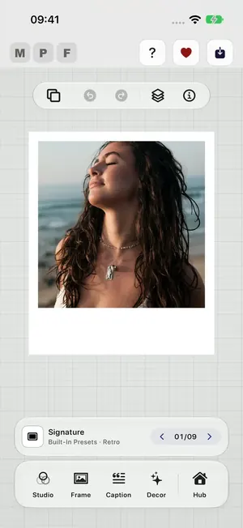
Your photo arrives framed
Tap Add photo on the empty canvas and choose a photo. It arrives in the Signature look. The strip above the tabs names the look; its arrows step to the next one, and tapping the strip opens every preset.
Start with the six steps, follow one photo from start to finish, then try four effects right here in your browser.
Every step names the button you will see in the app. Steps marked New arrived in version 3.3.
Tap Add photo on the empty canvas and choose one from Photos. The first time, the app offers to show you around: tap Show me, or No, thanks to start straight away.
Tap Presets at the top to browse whole looks, or step through them with Next Preset, the arrows above the tabs. A preset sets the frame, colours, filter and effects in one go.
In the Caption tab, write a caption, or add a Date Stamp or a Watermark. In the watermark’s style, choose My logo to use your own PNG. Suggestions can add the photo’s camera settings as a line of text.
Tap the photo and choose 3D Pop to lift the subject out of the frame. In Studio, Layer Magic blurs or removes the background, and you can choose how soft the blur goes. Decor adds stickers and 3D props.
In Frame, open Print & Shape and pick a Print size such as 4x6 or 8x10, portrait or landscape. Photo fit lets the photo cover the canvas, and Background Fill can be Transparent.
Tap Export at the top right: Save as Photo, a Live Photo, a video or a GIF, Share Photo, or Print. For a video, GIF or Live Photo, choose the Quality on Final Review and see the file size first. To reuse the look, save it as a preset; with iCloud Sync on, presets, captions and logos follow you to your other devices.
Every option, in the order you would use them, on one photo. The screenshots are from the app itself on an iPhone. Options marked New arrived in 3.3.
Everything starts with one photo.

Tap Add photo on the empty canvas and choose a photo. It arrives in the Signature look. The strip above the tabs names the look; its arrows step to the next one, and tapping the strip opens every preset.
Tap the photo itself for its quick actions, or open Studio for its look.
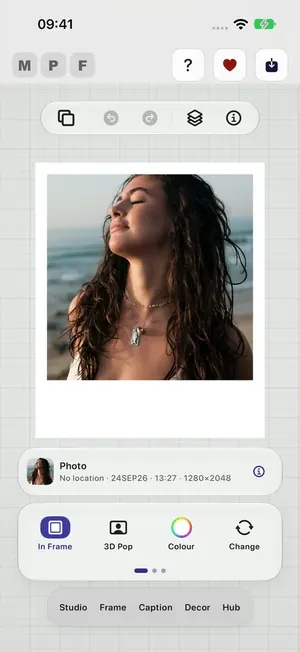
One tap selects the photo and shows its own toolbar:
Drag the photo to move it and pinch to zoom.
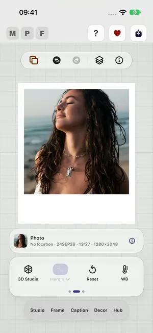
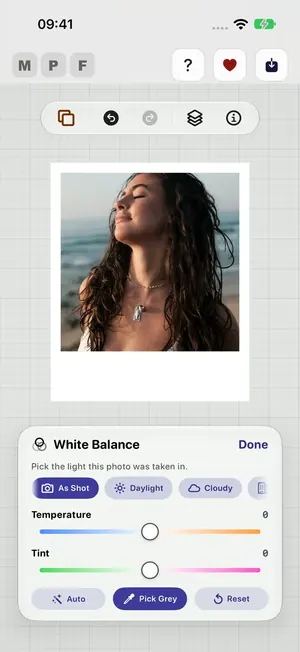
Pick the light the photo was taken in (As Shot, Daylight, Cloudy and more), or fine tune Temperature and Tint. Auto corrects it for you, and Pick Grey lets you tap something that should be grey. Tap Done when it looks right.
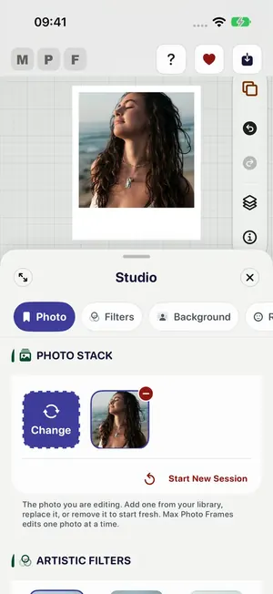
Open Studio. Photo shows the photo you are editing: Change replaces it, and Start New Session clears everything and starts fresh.
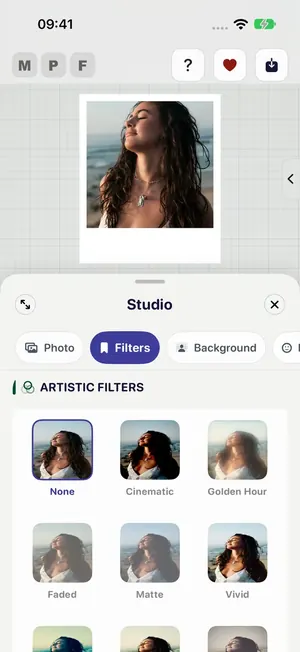
Artistic filters: Cinematic, Golden Hour, Faded, Matte, Vivid and more. None takes it back to the original colours.
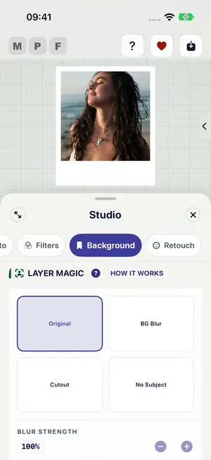
Layer Magic separates the subject on your device:
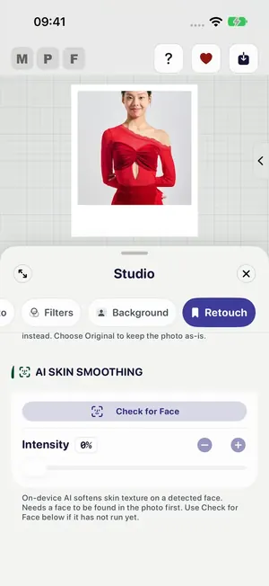
AI Skin Smoothing softens skin texture on a face it finds in the photo. Set the Intensity. It works on a face the app has found; Check for Face looks for one.
Everything around the photo lives in the Frame tab.
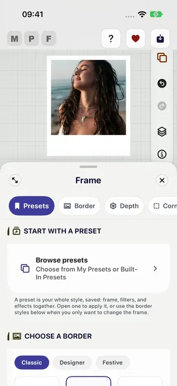
A preset is a whole look: frame, filter and effects together. Browse presets opens My Presets and Built-In Presets. Change anything below and you can save it as your own preset.
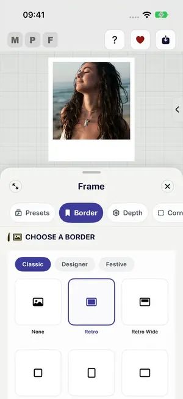
Choose a border from Classic, Designer or Festive. Classic includes Retro, Retro Wide and the new Film strip with its camera settings on the edge.
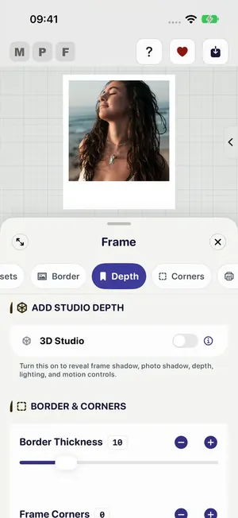
Turn on 3D Studio for a frame shadow, a shadow under the photo, depth, lighting and motion. To lift the subject out of the frame, tap the photo and choose 3D Pop.
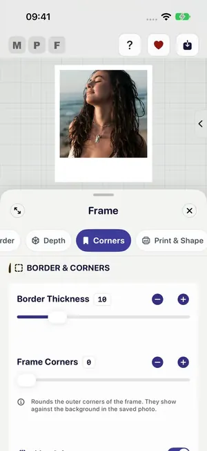
Border Thickness sets how wide the border is, and Frame Corners how round its corners are. The line underneath tells you what rounded corners will show in the saved photo.
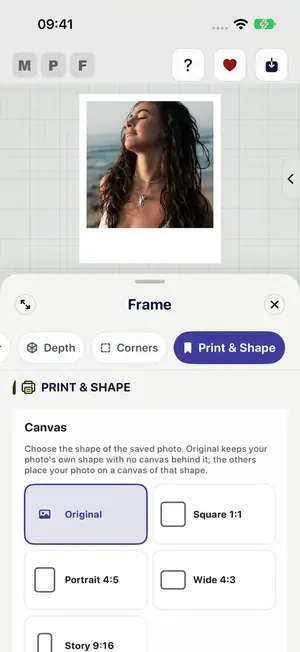
Add words, a date, your logo, the photo’s own details, and a little fun.
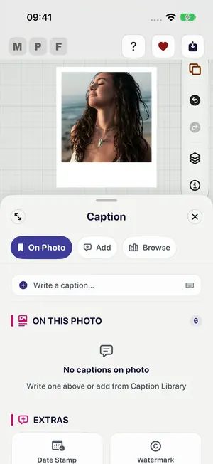
Type in Write a caption. Everything already on the photo is listed under On This Photo, where you can edit, restyle or remove it. Select a caption and its layer button lets you place it behind the subject.
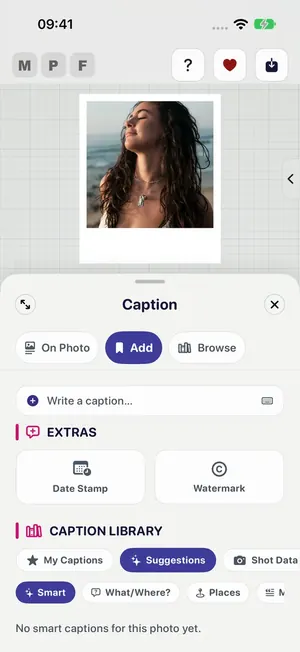
Date Stamp adds the date the photo was taken or one you choose. Watermark adds your name, or in its style choose My logo to use your own PNG.
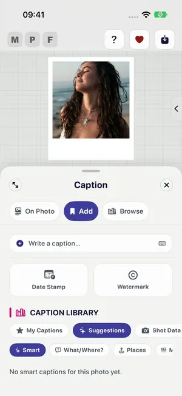
The Caption Library: My Captions, Suggestions and ready-made groups. Shot Data puts the photo’s shutter speed, aperture, ISO and focal length on it.
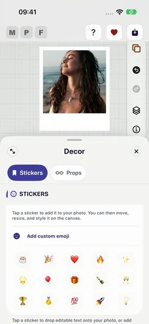
Tap a sticker to add it, then move, resize and style it on the canvas. Add custom emoji uses any emoji you like.
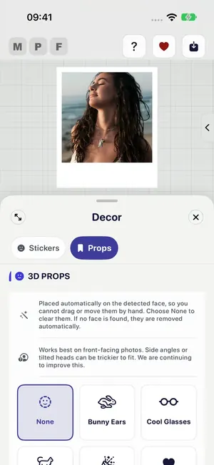
3D Props such as Bunny Ears and Cool Glasses sit on the faces the app finds.
One button at the top right.
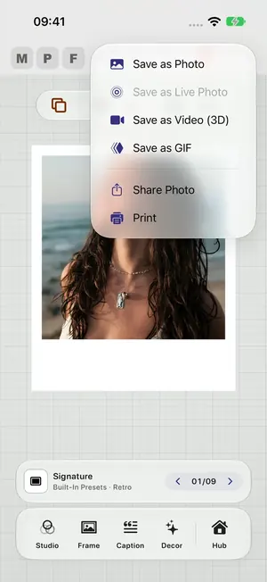
Tap Export: Save as Photo, Save as Live Photo (for a Live Photo), Save as Video (3D), Save as GIF, Share Photo or Print. For a video, GIF or Live Photo, Final Review lets you choose the Quality and shows the file size first.
Tap the options to see what each effect does to the layers of a picture. Each card says where the control lives in the app.
Flat colours, gradients, wood, or a deep shadow. The app can also pick a colour from your photo.
In the app: Tap Presets at the top of the screen to browse looks. Or tap Next Preset, above the tabs, to cycle through them one at a time.
3D Pop lifts the person or pet clear of the border, so the photo stands off the page.
In the app: Tap your photo on the canvas, then choose 3D Pop. Choosing In Frame puts it back inside the border.
You need: A photo with a clear subject, such as a person or a pet.
Text can sit behind the person instead of over them, the way a magazine cover does.
In the app: Add a caption in the Caption tab and select it. Tap its layer button, which reads Front, and choose Place behind subject.
You need: A photo with a clear subject for the words to go behind.
Blur it, drop it away, or keep only the scene. All of it happens on your device.
In the app: Open the Studio tab, tap Background, and use Layer Magic.
You need: A photo with a clear subject to separate from its background.
The effects that separate a subject from its background use Apple Vision on your own device. Nothing is uploaded, and a photo without a clear subject will not produce a cutout, and the app tells you when that happens rather than silently doing nothing.